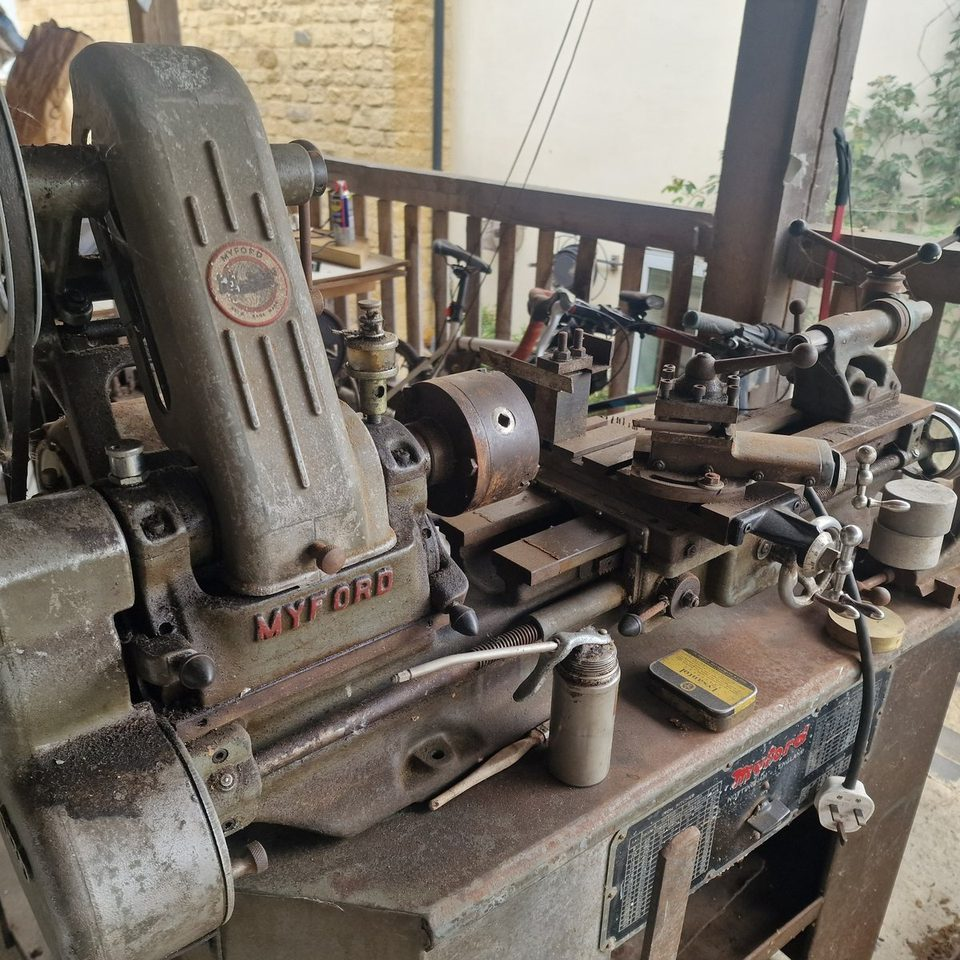
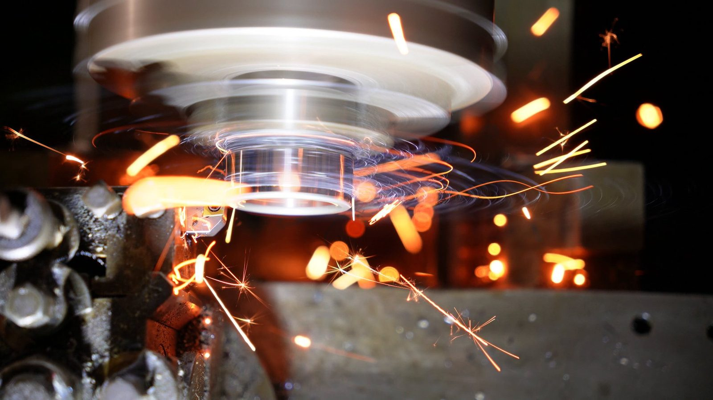
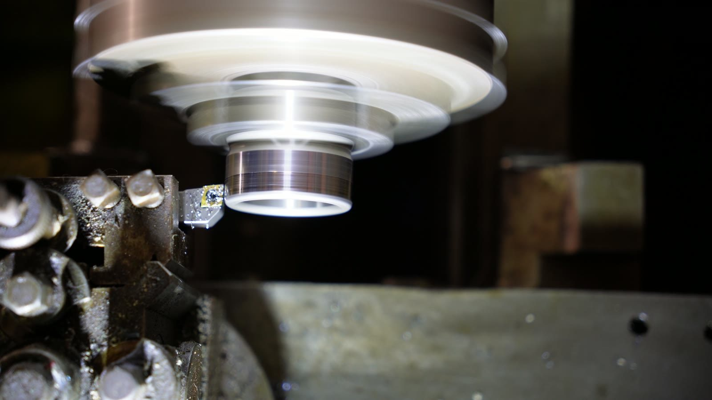
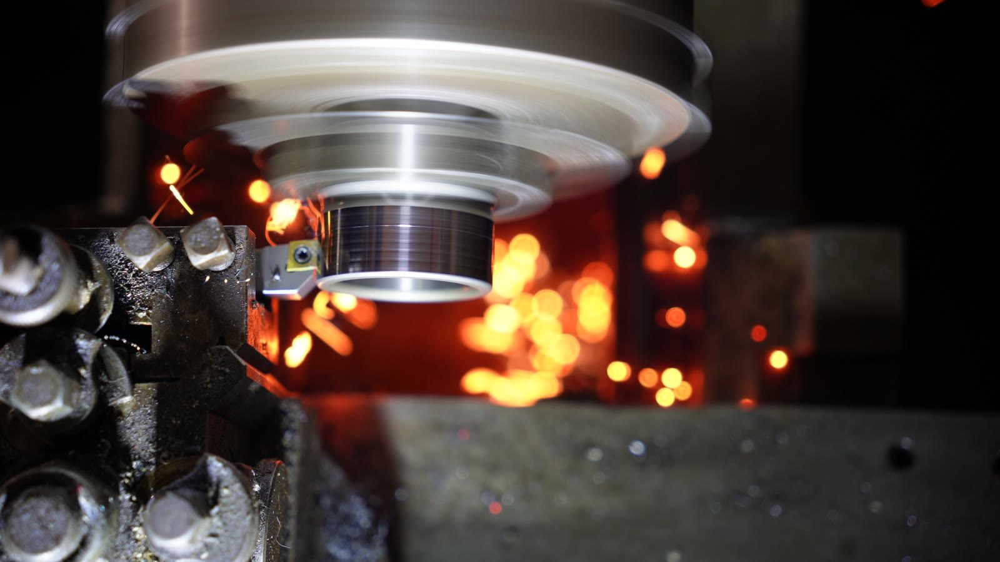
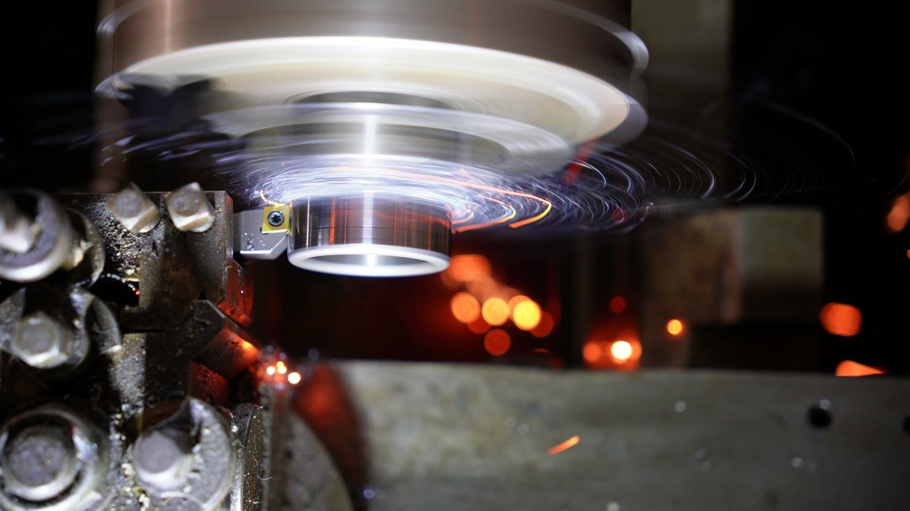
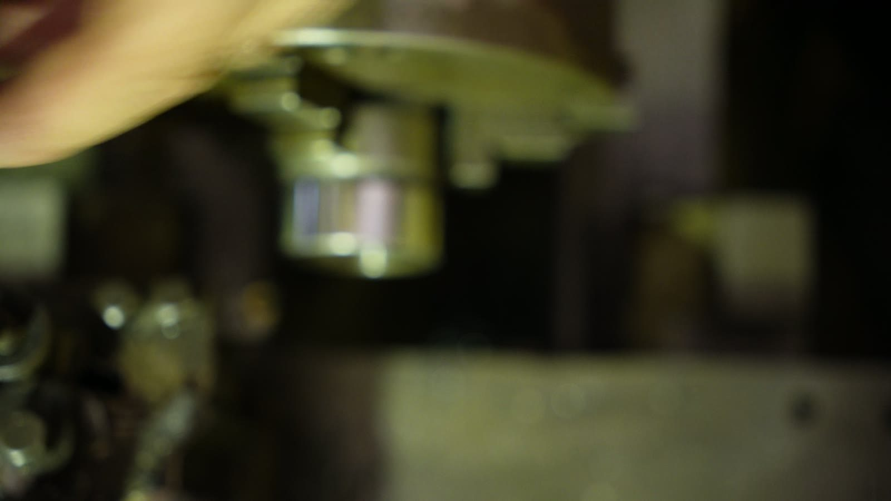

Longer cut
Machining / gratuitous sparks
Lathe Sparks
Hardened steel, CBN insert, old Colchester Chipmaster. Not pretending to be a complicated project page. Mainly sparks. Beautiful, slightly alarming sparks.
And yes, I also have a Myford. Obviously. Who does not need two lathes?

- Machine
- Colchester Chipmaster, early 1980s, 5in centre height, with the Kopp variator. Metric, which is the rare one. The three-phase motor runs off an inverter, and the circuit needed a different RCD before it would stop tripping every time I switched on.
- Workpiece
- A hardened bush off a friend’s digger, somewhere around 60 HRC, that needed taking down a little.
- Tooling
- A CBN insert, run dry. I did not write down which one, which I regret every time I want to buy another.
- Speeds and feeds
- Variator wound to the top. Feed by hand, because I did not trust myself with the power feed on a part that belonged to someone else.
- Depth of cut
- 0.1mm a pass. Small cuts, hand cranked, one at a time.
- Why it sparks
- The chips come off white hot and burn in the air. At this hardness almost all the cutting energy ends up as heat in a very small volume of metal, and a tiny bright chip with a fresh unoxidised surface will happily set about oxidising.
Why hardened steel behaves like this
Turn mild steel and you get a long ductile chip that curls off the tool, stays dull, and carries its heat away with it. Hardened steel has almost no ductility left, so instead of flowing it fails in narrow shear bands: the chip comes off segmented, and the energy goes into a shear zone small enough that it has no time to spread out. That is why the process looks more like grinding than turning, and it is also why CBN is the insert for it — it stays hard when it is hot, and unlike diamond it does not react with iron. Coolant would be the instinct and the wrong instinct: thermal shock cracks the insert. Dry is correct.
What I would try next
Learn the machine properly rather than working around it. Set a carriage stop, use the power feed, and get a consistent surface finish instead of whatever a hand crank and a held breath produce.
Best clip
The spark ring
Short one, probably the prettiest. Tool cuts, spindle blurs, sparks go into little orange orbits like a small industrial planetarium.
More orange drama
The bigger shower
Heavier shower
The brighter pass
Close cut
Right at the tool
Side view
More orange nonsense
The setup
Old iron, modern insert
Colchester Chipmaster - proper old British machinery, heavy in all the useful places. Cutting hardened steel with a CBN insert, which is why it looks less like turning and more like fireworks.
The point
None, almost.
There is no lesson here. Posted because I want to, it looks awesome









